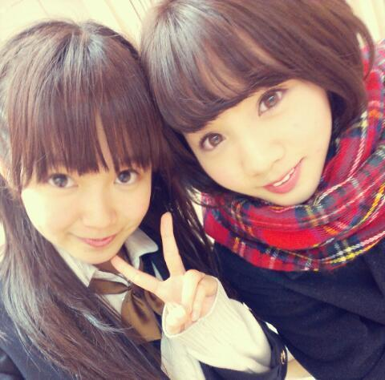
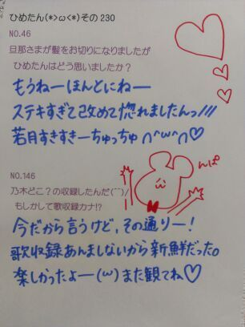
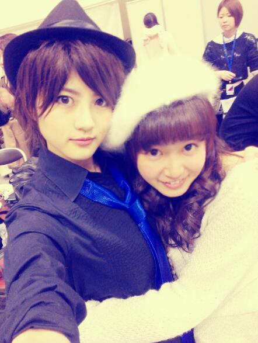
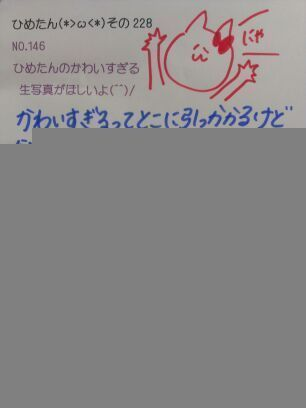
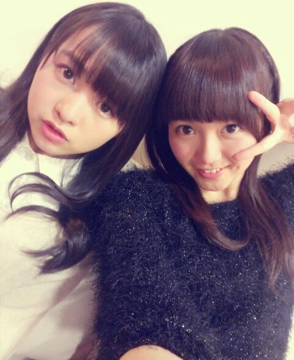
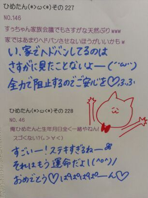
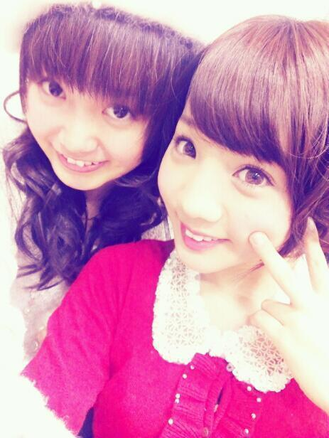
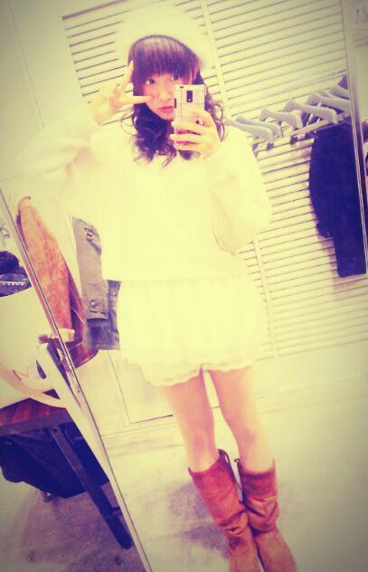
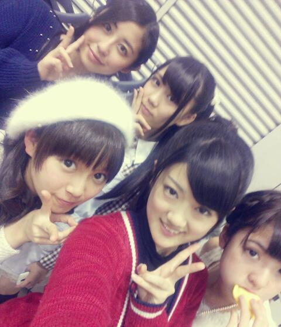

質問いっぱいありがーとう∩^ω^∩
少しずつ答えていくので
楽しみにしててくださーい♪

.
さてこの前の乃木どこでは
1986年メドレーをしましたー
なんてったってアイドル
フレンズ
ダンシングヒーロー
CHACHACHA
DESIRE
ひめたんは
なんてったってアイドルを
歌いましたん♪
えっとー
曲決めるのって挙手制だったのねー
だからみなみ(星野みなみchan)とか
まなつ(秋元真夏chan)とかと
曲の好みが一緒なんだねーって
ゆってた∩^ω^∩♪るん
好きな曲多くて
盛大に高まったメドレーでしたっ
最近はねー
ばりっばりの5th製作期間なうです！
レッスンやら撮影やら
着々と進んでってるからねー♪
毎日メンバーの顔みるぞ(｀・ω・´)
みなさんには発売日を楽しみに
しててほしいなーと思いつつ
いやーそれが高校生としても
忙しい毎日を送っておりまして。
いろいろ上手くいかないなー
なんて思いながら
毎日を精一杯に過ごしておりますー
今日はちょっと遠くで
スチール撮影しましたん♪
楽しかったよー＼(^^)／
一周年ライブ楽しみよー＼(^^)／
るーん＼(^^)／
今はとなりで
いくちゃん(生田絵梨花chan)が
作詞作曲して歌っておりますー＼(^^)／

 1月22日、誕生日だったんです。
1月22日、誕生日だったんです。
もう過ぎちゃったんですが
お祝い...してくれたりしますか？ごめんね過ぎちゃった(´;ω;`)
お誕生日おめでとうございます！
いくちゃんれなりんと一緒だねー♪
素敵な１年になりますようにっ
私明日高校受験！
受かったらおめでとうって言ってよーん(´∀｀)どうなったー？
受かったかな受かったかな(´∀｀)
あたしの学校にも受験生さん来たよー
ひめたん進級できなかったら
おんなじ学年になるねー◎
受験受かったよ(^^)/
ひめたんにお祝いしてほしいな!?おめでとう！お疲れ様でした♪
今のあいだにしっかり遊ぼうね←
高校生はねー楽しいと思うよー
いいこいいこー∩^ω^∩
これから受験なんだけど、落ちたら本気でやだから受かるよーに応援してー(^ ^)そりゃもうーねっ
受かりますよ。
ひめたんが言うんだもん大丈夫。
受かってやるぜこのやろーって
思っていれば完璧よ＼(^^)／★
受験生応援お菓子もそろそろ
お店に出てるのかな？食べるしかー
妹が中学受験を一週間後に
控えてるんだけど、兄として
何かしてあげられることは無いかな？ココアを作ってあげる( ^^ )
あと、受験の前日はしっかり寝たほうがいいよって伝えてくださいな。
いもたんふぁいとー！
受験まで１ヶ月を切りました！
でもなかなかやる気が出ないのでひめたんに喝を入れてもらいたいです(｀・ω・´)
あと応援メッセージお願いします！喝！ぱしこーんっ
えっとー
ここまで来たら、あとは体調管理だね！
このタイミングで病気になったらほんとに悲しくなっちゃうからねー
いっぱい食べて、いっぱい寝て、
元気な状態で試験挑んでくだされ＼(^^)／
応援してるよーえいえいおー♪
一番好きな歌は？えーどうしよう迷うなあ。
いつかランキングでも作ろうかなー
とりあえず今は ぱみゅぱみゅちゃんの
はーたーちーはたちーはたちーはたちー
が頭から離れんなー♪
乃木坂ライブで『48グループ』の曲を3曲歌う事になりました
ひめたんなら何を歌いたい？「ずっと前から」
「初日」
「君のことが好きだから」＼(^^)／
ひめたんは合唱って好きですか？合唱は好きなんだけどね、
声を張り上げてはパートを乱すことが
多々あります(´・ω・｀)
でも好きですよー♪

(＊´・ω・＊)ひめたん
受験生のみなさーん！
ラストスパート頑張ってくださいー
辛いなーとか思う時もあるかもだけど
ひめたんは精一杯応援するよ∩^ω^∩
フレッフレッフレー
さーむーいーね。
こんな寒い日にはぎゅーってしましょ？
てことでteam*若月のみなさん
怒らないでくださーい(´;ω;`)
若月かっこええええええええええい！

今日は本屋さんで
川後さん(川後陽菜chan)に
ばったり会いましたー
プライベートでメンバーに会うのって
なんだか不思議な気持ちだね///
お互い学校帰りだからびびったねー♪
おおう！みたいなね(ω)

てことで
明日1/26(土)24:00まで
質問受け付けようそうしよう！
期限過ぎたものは基本答えられないと
思うのでご了承ください(´;ω;`)
待ってますん♪
ルールはこのあいだと一緒！
わからんーて人は
ひめたん(*>ω<*)その238 を見てねー
そして、12月1月のプレゼント
運営さんから受けとりました！
サンタさんありがとう(´;ω;`)
メリークリスマス(´;ω;`)
(＊´・ω・＊)ひめたん
なかいさんん！

黒のモフモフ着てたらみんなから
なんか珍しいーと言われましたが
確かにこれはひめたんの私服ではない！
でもねしゃーないの。
そゆこともたまにはあるんだから。
ねっ？
東京の雪は一週間も解けないんだねー
驚いた。
恐るべし東京。
最近の待ち受けは東京ミュウミュウ(ω)
改めて見たらめちゃ可愛くて///
みなさんの待ち受けはなんだろなー
てことで昨日は全員で
スチール撮影かーらーのレッスン！
たくさん衣装着て撮りましたー
画像解禁まで
ちょっと時間が空いちゃうだろうから
とりあ髪型はこんな感じって報告♪
編み込み × さらさらストレート
(//ω//)
てか思ったんだけど
今まで個握とか個人PVとかは
結構おろしてみたりもしたけど
スチール撮影の時は
ずっと結んでたのよね今まで！
だからストレートひめたんの写真は
初めましてかもよー？
レアだねレアだね＊
レッスンは5thの曲！
もう5th製作期間に入ったのかー
早いなー
そして頑張らねばなー。
こちらもあんまし言えないけど
結構好きな感じの曲ですー♪
あのーそしてね、
乃木どこ歌収録のエピソードを
ちょっと書きたいと思いまして＼(^^)／
なんてゆか、
ライブが終わるたびに思うことがあって
何度かブログにも書いたフレーズですが
ひめたんはほんとにほんとに
歌うことが好きで
パフォーマンスを披露することが
ほんとに幸せなんだ、と！
そしてみんなのパフォーマンスを
みることもまた好きです(ω)
だから乃木どこで
歌うことができて嬉しかった！
あんまし乃木坂出ることもないので
ひめきゅんさんには喜んでいただけたら
いただけたかなーと思います。
∩^ω^∩♪

 ひめたんが、ＬＯＶＥと聞いて何を連想する？
ひめたんが、ＬＯＶＥと聞いて何を連想する？L・O・V・E・ラブリー・プッチモニ！
伝わるかしら///
ひめたんの乃木坂での曲をあげるとしたら何の曲？狼に口笛を、春のメロディー
あたりかなあ...
えっと、勘です(*>ω<*)ふふっ
モダン焼き(おこのみ焼き) そば派 うどん派 おしえて~そば(｀・ω・´)
そば以外は受け付けないぜよ！
広島人から言わしてもらうとモダン焼きってか、そばがあってのお好み焼きですよー
○○ガール、または女子とよく言われるけど、
ひめたんは何ガールが好きですか？
またはなりたいですか？ 何ガールになろうかな。
なにがある、なにがーる、なにが...
ごめんなさい黙ります←
あ、今のひめたんキャベツガールだよ！
今までもらった誕生日プレゼントで一番印象に残ってるもの（こと）ってなんですか？去年の誕生日は本当に嬉しかった！
ひめきゅんさんには生誕祭を盛大にひらいていただき、
メンバーからもお祝いしてもらって素敵な誕生日になりました(*・ω・*)
あとは、質問の答えから反れちゃうかもだけど、
今まで15回誕生日迎えた中で、4/13ひめたん上空は晴れる確率が高い！
なぜなら
ひめたんが晴れ女だからですどや。
中元家の卵焼きの作り方を
詳しく教えて！！
・材料
卵 2っ
砂糖、塩 適量
コンデンスミルク 1っ
ガムシロップ 1/2っ
チーズを入れても美味しいよー♪
・手順
卵を割りまーす
材料を全部混ぜまーす
フライパンに油を敷きまーす
弱火で焼きまーす
クルっと返すの頑張ってくださーい
完成でーす＼(^^)／

(＊´・ω・＊)ひめたん
.
個握の時あみ(能條愛未chan)と♪

ろってぃー(川村真洋chan)との
デート報告！
ろってぃーブログとかぶることあるけど
まあ気にしないで読んでくーださいっ♪
渋谷行ってきた！
ろてぃとは前からずっと
カラオケ行きたいねーとかゆってて
やっと予定が合いましたー
待ち合わせてすぐ高まったのが
ベレー帽お揃いだったの(ω)
ろてぃは落ち着いた赤、ひめたんは白で
被り方とかちょっと違ったけど
もうねーそれはそれはびっくりしたー
ろてぃが好きなカフェに
連れてってもらって
まったりお話したーり、
楽しみにしてたカラオケしたーり、
ふらーっと宛もなく東京の街を
歩いたり＼(^^)／♪
カラオケはねー
もう本当に本当に感動した！
ろてぃはみなさん知っての通り
歌が上手いのねー
だから、
ろてぃの歌をいーっぱい聴けて
幸せですん( ^ω^ )♪
ひめたんはそん時
風邪引いてるのもあって
声を張り上げることはできなかったので
ひったっすっらっバラード祭りで♪
逆にろてぃは
アップテンポな曲が多かったかなー
いつもなら
わりとキー高めの曲の方が
レパートリー多いんだけどね
でもこの機会に
もっと歌の幅を広げたいなーと
思いました！
で、その時は何の曲を歌ったのか。
えっとね
いわゆる鉄板の名曲スペシャル
だったと思うー
Kiroroさん、花＊花さん、
いきものがかりさんなどなど。
お洋服を買うブランドといい、
歌うアーティストさんといい、
もうばらっばらなのねー(ω)
あとはふたりでお話しながら
街を徘徊したー
ろてぃとはよくお話するんだけどね
気があうのよ(´・ω・｀)♪

 最近のマイブームは何でしょうかー？
最近のマイブームは何でしょうかー？100万のたまごってアプリ。
100万回叩いたらたまごが割れるらしい。
オチを知ってしまったんだけどねー
休憩時間にたまご叩いてる高校生、
かわいいしょ∩^ω^∩？
最近オススメの本はありますか？現文の先生が教えて下さった
夏目漱石を読んでみようと思ってますー
ひめたんは中元日芽香からHIMEMETALに変わる時ある？・・・ひめめたる...
会ってみたいかしらー？
でもひめたんはきつね様に会ったことないからねー(｀・ω・´)
毎年、年賀状って何枚くらい書いてますか??結構な数行くよ！
学校の子、スクールの子、地元の子、
多方面に友達がいるからね＊
去年はメンバーさんにも書いたかなー
自分自身の事をぐぐった事ある？ググる？
前から思ってたんだけど、
ググるって何ぞやー？
ひめたんゎょくどこで服買うのー??渋谷の109かネットかなー♪
握手会ピンクめっちゃ身につけていくけど、喜んでくれるー？ｗｗえーそゆのはほんとにほんとに
嬉しいよー喜ぶよ！ぴんくは正義＊
ひめたんはどうのような健康・体調管理してる？？この一週間は寒くて外出てないけど
いつもならウォーキングをよくしますー
伊達マスク族でもありますー
伊達マスクはすっぴんを隠すことができ
さらにお肌の保湿も可能ですー♪
さらに落ち着きますー＼(^^)／
男子の好きな髪の長さは10段階で表すとどんくらい?似合ってればなんでも好きよー
とかいう答えはズルいかしら。ふふ
高飛びで、ひめたん、背面とびみたいなとび方をしましたが、あれは、練習したことあったのかな？背面とび...のつもり...
中学で高跳びやったのねー
それで挟み飛び練習してたら背面とびを修得したの！
修得...したの(´・ω・｀)
ウォーキングは決まったコースあるの？それとも思いつき？また、何かを目的に行くとか？教えて。まったく決まってないよー
ノープランのまま外に出て、
気の向く方へ歩いて行ってみます。
紅葉の季節が恋しい...あああ(´;ω;`)
(＊´・ω・＊)ひめたん
琵琶湖は滋賀県ですねー(´;ω;`) .
岐阜県民のみなさん
滋賀県民のみなさん
ほんとにほんとにごめんなさい(´;ω;`)
教えて下さった方ありがとう(´;ω;`)
こっ高校の範囲はともかーく
中学卒業までの教養は
完璧だったんだからねって
高校の友達に言い続けてきましたが
もうねー反省しました←
日本地図習うのは小４ですね...
地理がんばります...うぅ
さて横浜個握！
来てくださった方
ありがとうございました＼(^^)／
都会の雪は解けないんだね！
ねーなんでー？
道路がコンクリートだから？
ん？アスファルト？まあーいいやー
ひめたんはあんなに雪が積もってるのは
始めて見ましたー怖かったー(´;ω;`)
広島はねー今年は東京より早く
雪は降ったみたいなんだけど
積もることはあんましないのよー
雪は [解けない] ！
漢字がいろいろ思い浮かんだんで
ちゃんと調べたよー
リサーチって大事だねー
電車が遅延したり運休になったり
道路もスリップしそうになったりで
みなさん無事かしら(´;ω;`)
新成人の方も大丈夫ですか？
ケガとかしてないかなー心配です。
乃木坂の新成人のおねえたまは
立派にあいさつもして、
綺麗なお洋服も着て、
本当におねえたまたち
素敵だなって思った(^^)♪
今日はちゃんと全身撮った！褒めてー

結局おニューのベレー帽
かぶりましたぜ(ω)
でもリクエストがあった他の髪型も
いつかやるのでお楽しみに！
ニットとスカートは CECIL McBEE ＊
前にもゆったかも、
いちおう好きなブランドはあるけど
基本 服に惚れるタイプなので
結果いつも買ってるとこばらばらなのー
ベレー帽はおうちの近くの
雑貨屋さんでゲットしましたー♪
ビーズがついてるよー
そう、大雪の中を生足で来た。帰った。
おまけに傘を忘れたので、
行きは雪に打たれてもう大惨事。
電車は幸いなことに
長い時間遅延することはなかったけどね
もう少し遅い時間だったら
きっと危なかったて感じですねー
今日は
旦那さま(みゅみゅ:若月佑美chan)が
またイケメンすぎたのねー
そんで、雪やばいよーて話になって
このまま帰れなかったら
パシフィコに泊まろうず！
ふたりでくっついて泊まろうず！
ってなってたんだけど
無事帰ってきましたー( ^ω^ )
だから今度は
おうちにお泊まりしに行きます＊
許可とってないけど
勝手に宣言しときますーふふふ
きっと許してくれるはず。
かれこれ１年近くお泊まりしてなーい！
今年の目標をもうひとつ見つけた！
発表しますーどぅるるるー
美白(・∀・)

まあやが切れてるやーごめんね←
えっとー
左上:るんるん(斎藤ちはるchan)
右上:かわごさん(川後陽菜chan)
左下:ひめたん
中央:ちま(樋口日奈chan)
右下:まあや(和田まあやchan)
この５人の中で
いっちゃんお姉さんなのは
川後のひなでもなく
樋口のひなでもなく
私だ！
(＊´・ω・＊)ひめたん